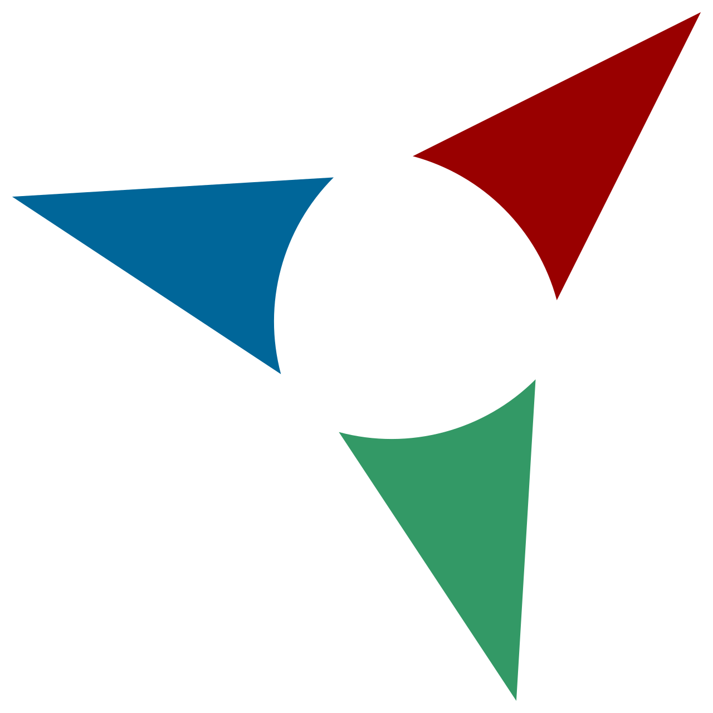

대표 로고대표 브랜드 마크
대표 로고대표 브랜드 마크홈 > 브랜드 매거진 > DL이앤씨
DL이앤씨 DL E&C
DL이앤씨(DL E&C)는 2021년 대림산업에서 분할 설립된 DL그룹 계열 건설사로, e편한세상·아크로 아파트 브랜드를 보유한 기업이다.
산업 분야 브랜드·비즈니스 · 공개 등급 자료 기반 · 브랜드 평가 4.1 ★
한눈에 보는 브랜드
DL이앤씨(DL E&C)는 한국을 대표하는 대형 종합건설사로, 1939년 인천 부평에서 목재·건자재를 다루던 부림상회를 모태로 출발했다. 1947년 대림산업으로 법인 전환해 토건업에 진출했고, 2021년 1월 대림산업이 지주사 체제로 개편되며 건설부문이 인적분할되어 DL이앤씨로 독립했다.
2024년 연결 매출 약 8조3천억원, 2025년 시공능력평가 4위(약 11조원)로 빅5에 든다. 주택 브랜드 e편한세상·아크로와 플랜트·토목을 양대 축으로 한다.
브랜드 관점
핵심은 두 가지 차별점이다. 첫째, 하이엔드 주거에서 아크로(ACRO)는 2013년 반포 아크로리버파크로 재정의된 이후 선호도 조사 수년 연속 1위를 지키며 한국 부동산 시장에서 프리미엄 아파트의 기준점 역할을 한다.
일반 주거인 e편한세상이 물량을 받치고, 아크로가 단가와 위상을 끌어올리는 이원 구조다. 둘째, 플랜트에서 국내 최초 탄소포집 상용화 경험을 바탕으로 싱가포르 자회사 카본코를 통해 CCUS와 그린수소 EPC로 사업을 넓히며, 연간 100만톤급 포집 플랜트 설계 역량을 무기로 삼는다.
2021년 지주사 전환으로 DL홀딩스 산하 순수 건설사가 되면서 석유화학과 분리돼 건설·EPC에 집중하는 체질이 됐다. 한국 독자 입장에서는, 분양 시 어떤 브랜드가 붙느냐를 두고 재건축·재개발 조합과 시공사가 협상하는 모습을 통해 이 회사 브랜드 위계가 자산 가치 인식에 직접 작용함을 읽을 수 있다.
다만 주택 편중과 중대재해·정비사업 분쟁은 약점으로 지적된다.
시작과 성장
태동기는 일제강점기 말이다. 1939년 10월 이재준 등 세 사람이 자본금 3만 원, 종업원 7명으로 인천 부평역 앞에 부림상회를 열어 목재와 건자재를 팔았다.
해방 직후인 1947년 부평경찰서 신축 공사로 토건업에 발을 디뎠고, 같은 해 대림산업㈜으로 상호를 바꿔 법인회사가 됐다. 1966년 베트남 진출은 한국 건설업의 해외 시장 개척 신호탄이 되며 글로벌 EPC 기업으로 가는 발판이 됐다.
이후 주택·토목·플랜트로 영역을 넓혀 국내 최상위권 건설사로 성장했다. 가장 큰 전환점은 2021년 1월이다.
대림산업이 지주회사 체제로 개편되면서 건설부문을 떼어 DL이앤씨를, 석유화학부문을 떼어 DL케미칼을 신설했고, 존속 모회사는 DL홀딩스로 이어졌다. 분할 직후 DL이앤씨는 한국거래소에 신규 상장됐다.
브랜드 아이덴티티
브랜드 신조는 '기본이 혁신이다'로, 기본을 지키면서 그 안에서 혁신을 이룬다는 정신을 담는다. 비주얼 아이덴티티는 도시와 사람을 잇는 세상의 기본 요소들을 여러 모양의 블록으로 형상화하고, 기존 블루 계열을 유지하되 무게감 있고 세련된 톤으로 다듬은 워터마크형 로고다.
정직하고 묵직한 영문 대문자 표기로 신뢰를 표현하며, 그룹 CI는 독일 iF 디자인 어워드에서 본상을 받았다. 보이스는 절제되고 기술 중심적이며 프리미엄을 지향한다.
타깃은 고급 주거를 원하는 실수요·재건축 조합과 국내외 플랜트 발주처로 이원화된다.
제품과 서비스
사업은 주택·토목·플랜트 세 축이며 자회사 DL건설을 통해 포트폴리오를 보강한다. 주택은 대중 브랜드 e편한세상과 하이엔드 브랜드 아크로(ACRO)로 나뉘어, 일반 분양과 프리미엄 정비사업을 함께 공략한다.
토목은 도로·교량 등 인프라를, 플랜트는 석유화학 설비와 탄소포집(CCUS)·수소 EPC를 다룬다. 분양·정비사업 수주와 국내외 EPC 발주가 주요 사업 경로다.
현재 상태
본사는 2025년 서울 강서구 마곡 원그로브로 이전했다(이전 사옥은 종로 돈의문 디타워). 지배구조는 이해욱 회장 영향력 아래 지주사 DL홀딩스가 약 23%대 지분으로 DL이앤씨를 지배하는 체제다.
국가는 대한민국이며, 2024년 연결 매출은 약 8조3천억원, 영업이익은 약 2천7백억원 규모다.
BI/CI 변천사
대표 로고대표 브랜드 마크자주 묻는 질문
DL이앤씨는 언제 설립되었나요?
DL이앤씨는 2021년 설립되었습니다.
DL이앤씨의 브랜드 아이덴티티는 무엇인가요?
브랜드 신조는 '기본이 혁신이다'로, 기본을 지키면서 그 안에서 혁신을 이룬다는 정신을 담는다.
DL이앤씨의 대표 제품은 무엇인가요?
사업은 주택·토목·플랜트 세 축이며 자회사 DL건설을 통해 포트폴리오를 보강한다.
DL이앤씨의 본사는 어디에 있나요?
본사는 2025년 서울 강서구 마곡 원그로브로 이전했다(이전 사옥은 종로 돈의문 디타워).
DL이앤씨의 공식 웹사이트는 어디인가요?
DL이앤씨의 공식 웹사이트는 https://www.dlenc.co.kr/ 입니다.
함께 읽을 브랜드
Is
Islington Square
브랜드·비즈니스 · 편집 검수Islington SquareIslington Square는 2024년에 기록된 Designed by DNCO 계열의 브랜드 아이덴티티 사례입니다. Campbell Hay가 아이덴티티 작업의 디...
 브랜드·비즈니스 · 편집 검수Bose
브랜드·비즈니스 · 편집 검수BoseBose는 2024년에 기록된 Designed by Collins 계열의 브랜드 아이덴티티 사례입니다. Collins가 아이덴티티 작업의 디자이너로 기록되어 있습니다...
 브랜드·비즈니스 · 편집 검수Deezer
브랜드·비즈니스 · 편집 검수DeezerDeezer는 2023년에 기록된 Designed by Koto 계열의 브랜드 아이덴티티 사례입니다. Koto가 아이덴티티 작업의 디자이너로 기록되어 있습니다. 공개...

브랜드·비즈니스 · 편집 검수JaffaJaffa는 2024년에 기록된 Big Brands 계열의 브랜드 아이덴티티 사례입니다. Earthling Studio가 아이덴티티 작업의 디자이너로 기록되어 있습니...
Ka
Kawatetsu / Kawasaki Steel Corporation
브랜드·비즈니스 · 편집 검수Kawatetsu / Kawasaki Steel CorporationKawatetsu / Kawasaki Steel Corporation는 1989년에 기록된 Designed by PAOS 계열의 브랜드 아이덴티티 사례입니다. PAO...
Lo
Lobos 1707 Tequila
브랜드·비즈니스 · 편집 검수Lobos 1707 TequilaLobos 1707 Tequila는 2025년에 기록된 Designed by Landor 계열의 브랜드 아이덴티티 사례입니다. Landor가 아이덴티티 작업의 디자이...
Nu
Nuud
브랜드·비즈니스 · 편집 검수NuudNuud는 2021년에 기록된 Designed by Mother 계열의 브랜드 아이덴티티 사례입니다. Mother Design가 아이덴티티 작업의 디자이너로 기록되어...
 브랜드·비즈니스 · 편집 검수Sigma
브랜드·비즈니스 · 편집 검수SigmaSigma는 2025년에 기록된 From Japan 계열의 브랜드 아이덴티티 사례입니다. Stockholm Design Lab가 아이덴티티 작업의 디자이너로 기록되어...